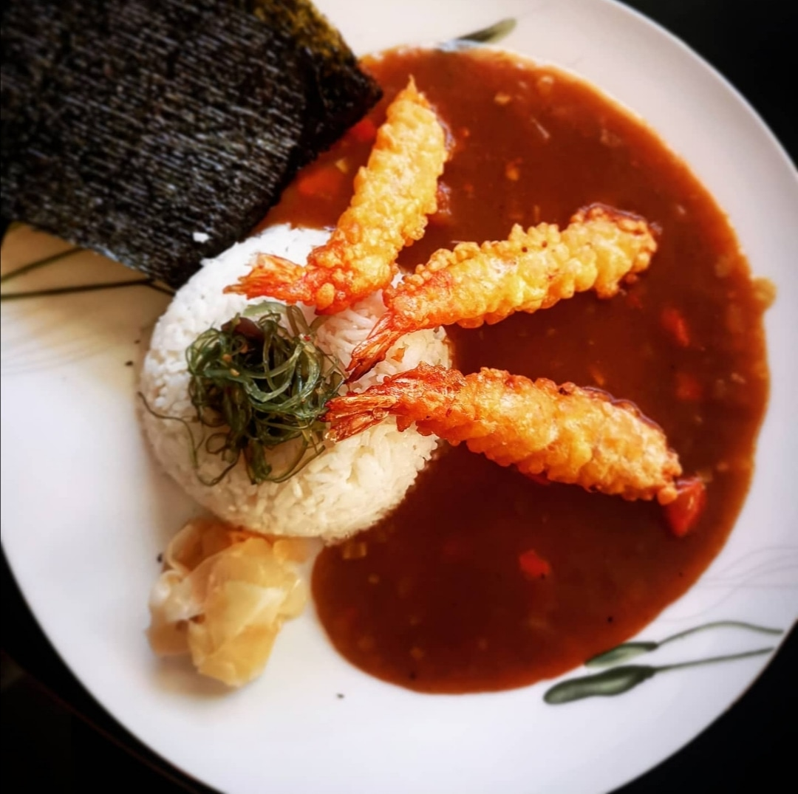

Japanese Curry with Tempura Shrimp

This Japanese comfort food is packed full of flavor and is sure to fill you up.
Ingredients:
- Onion
- Garlic
- Carrot
- Potato
- Green Apple
- Japanese Curry Roux
- Water
- Soy Sauce
- Rice Vinegar
- Tempura Shrimp
- Rice
- Pickled Ginger
Steps:
- Add onion to a large pot and caramelise on low heat for 30-40 minutes.
- Add in the garlic, carrot, potato and onion and cook until fragrant.
- Whisk in the curry roux with water and stir until the roux has dissolved.
- When the curry has thickened, season with soy sauce and rice vinegar.
- Serve with tempura shrimp, rice and pickled ginger.